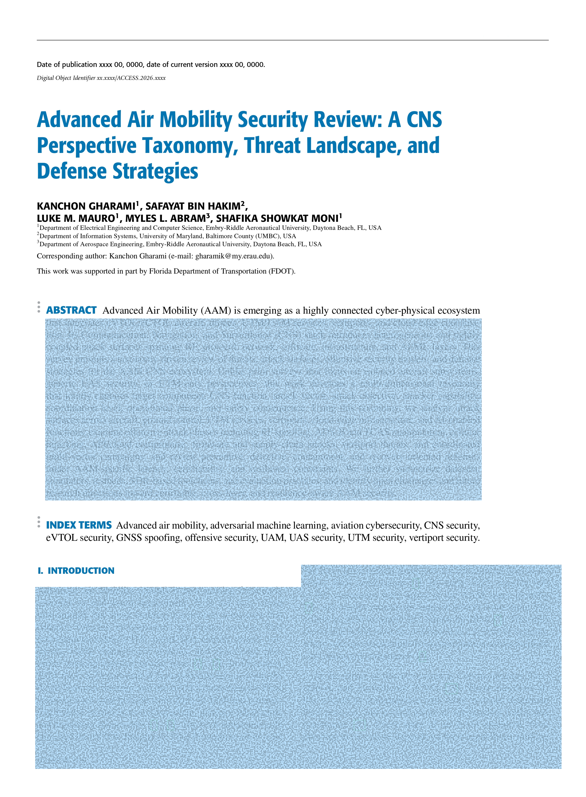
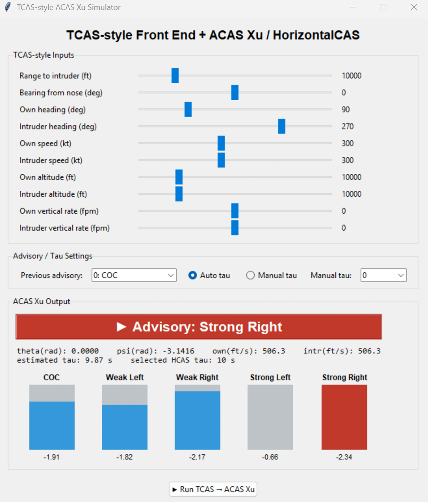
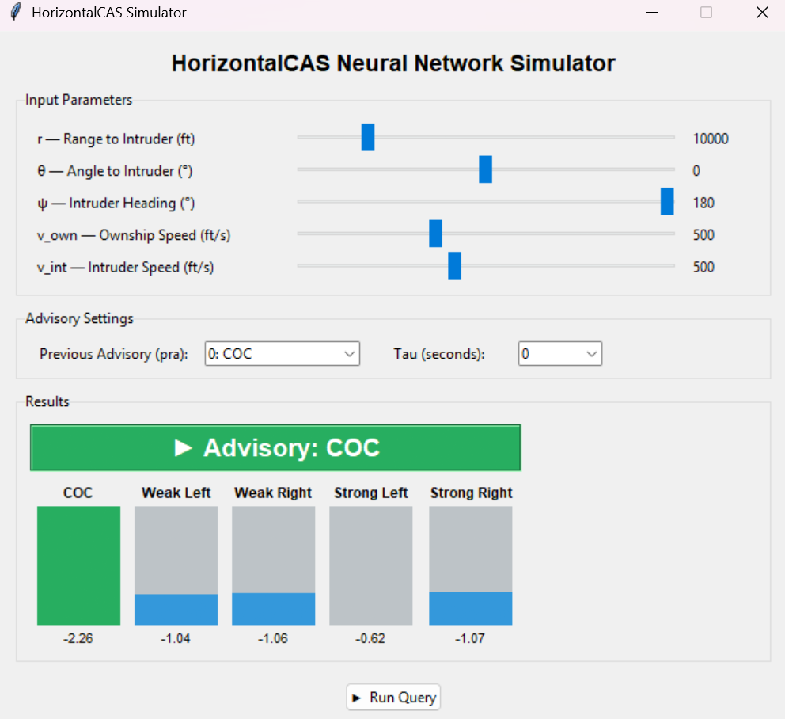
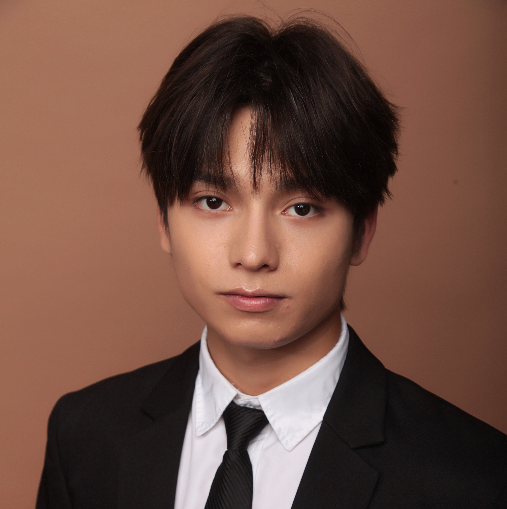

A cybersecurity investigation into AAM's communication, navigation, and surveillance ecosystem — before adversaries exploit it first.
Key insight: AAM adopts protocols from civil aviation, Tesla-style autonomy, and cellular networks — each designed in silos. Their integration creates unexplored security gaps.
When well established protocols are adapted for new systems, the gaps between them become the vulnerabilities. AAM inherits decades of legacy weaknesses — while creating entirely new ones.
Is AAM ready to resist attacks and operate safely?
Investigate the security landscape of AAM prior to deployment by systematically identifying threats, simulating cyber-physical attacks, and developing resilient defense mechanisms to safeguard lives at scale.
Scope
From aircraft avionics to vertiport infrastructure — we analyze the complete communication, navigation & surveillance stack.
Map the entire threat landscape — assets, data flows, trust boundaries, and attack surfaces.
Design and simulate multi-vector attack frameworks — find the vulnerabilities before adversaries exploits them.
Develop detection and adaptive defense mechanisms to harden the system end-to-end.

Gharami et al., Preprint 2026
A CNS Perspective Taxonomy, Threat Landscape, and Defense Strategies — the first comprehensive survey unifying all AAM attack surfaces under one framework.
What we covered
11
Surveys compared
8+
Attack classes mapped
9
Coverage gaps our study closes
Authors: Gharami · Hakim · Mauro · Abram · Moni — Embry-Riddle Aeronautical University
Communication, navigation, and surveillance studied in isolation. Their joint role in AAM safety was never addressed as a system.
Surveys listed threats but rarely explained how attacks propagate across components — how a GNSS spoof becomes a mid-air collision risk.
Vertiports, charging stations, and cloud-edge services — all on the safety path — received almost no coverage in prior work.
Our contribution: The first survey with full coverage across all 9 dimensions — including CNS function, target space, attack vector, cross-layer propagation, vertiport, cloud, response, taxonomy, and evaluation.
Build architecture, data-flow, and trust maps for AAM CNS.
Study high-impact attack vectors before they appear in real deployment.
Design authentication, sensor cross-checking, and anomaly detection defenses.
Inject fake aircraft signals to trigger false collision alerts. Force unnecessary evasive maneuvers. Mislead traffic control with spoofed identity data.
Deploy rogue base stations via SDR to intercept UAM/UTM communications. Execute man-in-the-middle attacks. Disrupt scheduling and command channels.
Register fake vertiport entries to divert aircraft. Overwhelm real vertiport scheduling via DDoS. Create cascading failures across the urban airspace.
TCAS is the aircraft collision avoidance system. It continuously watches nearby aircraft and warns when another aircraft may become a collision risk.
Aircraft exchange surveillance signals to estimate range, altitude, and relative movement.
TCAS first gives a Traffic Advisory, then a Resolution Advisory if collision risk increases.
The aircraft may be instructed to climb, descend, or avoid the predicted conflict path.
ACAS is the broader collision avoidance family. ACAS Xu is designed for unmanned aircraft.
TCAS range equation — attacker limited by speed of light
Spoof a ghost aircraft into the TCAS traffic display. Pilot/autopilot sees an intruder that does not exist — yellow "TRAFFIC" alert fires.
Escalate to a red RA — command the aircraft to CLIMB or DESCEND. In modern aircraft, autopilot executes automatically, bypassing the pilot.
Impersonate a ground station, send an unauthenticated SLC command. TCAS silently switches to TA-only mode — all collision avoidance disabled.
USENIX Security 2024 (Longo et al.): First working RF attacks on certified TCAS hardware proven with COTS SDR (~$10k). Attack range up to 4.2 km. Success rate ~80% for RA injection within 16 seconds. For AAM flying below 500m, a rooftop attacker trivially satisfies this constraint.

TCAS inputs (range, bearing, heading, altitude) are translated into ACAS Xu state variables. The spoofed scenario drives the network to output Advisory: Strong Right (score −2.34) — an aggressive lateral maneuver that, at low altitude, risks corridor exit or mid-air conflict.

The same geometry queried directly (ψ = 180°, τ = 0 s, no prior advisory) returns Advisory: COC (score −2.26). The divergence between ① and ② isolates the TCAS front-end translation layer as the attack surface — the network itself is not compromised, the input state is.
Key finding: Injecting a false intruder via SDR shifts the ACAS Xu input state enough to flip the advisory from safe COC to an evasive Strong Right — without touching the neural network weights.
Gazebo ROS simulation — autonomous drone executing forced RA maneuver toward collision
A drone flying a nominal corridor path receives a spoofed Strong Right advisory via the injected TCAS signal. The autonomous flight controller executes the maneuver immediately — no human override, no sanity check.
At AAM operating altitudes (150–500 m), a lateral diversion of this magnitude exits the designated corridor within seconds, entering adjacent traffic lanes or obstacle-dense urban airspace with no recovery margin.
Cryptographic binding between transponder identity and broadcast — rejects unauthenticated SLC ground commands. OSNMA (Galileo) shows this is feasible at receiver level.
Verify declared altitude against measured vertical angle of arrival. An attacker on the ground claiming to be above the aircraft is immediately detectable — no protocol change needed.
Estimated closure rate from Doppler shift must match TCAS-reported closure rate. Stationary ground attacker cannot fake a believable Doppler signature of a moving aircraft.
Cross-reference TCAS intruder identity against UTM traffic picture. An intruder not registered in UTM is flagged before the RA is acted on.
Cross-validate TCAS intruder with: LiDAR, ultrasonic sensors, camera-based detection. Ghost aircraft that exists only in TCAS but not in onboard perception = spoofed.
Our research extends the USENIX 2024 findings specifically to the AAM threat model, quantifying how low-altitude dense operations amplify attack feasibility and impact.
Future AAM systems may use 4G, 5G, and 6G connectivity for telemetry, UTM coordination, cloud services, and backup command channels.
Rogue cell selection and command injection model
Key risk: Dense AAM corridors with frequent handovers — every handover is an attack window. 5G network slicing and edge services expand the surface beyond the radio link.
Legitimate cell
Authenticated C2
Rogue base station
Command injection
Require mutual authentication on all C2 sessions. HMAC freshness check with sequence numbers — replay and injection fail without valid keys.
Whitelist known legitimate base stations by physical-layer signature. Unexpected stronger cell triggers an alert before reselection occurs.
Lock C2 modem to 4G/5G only — refuse 2G/3G fallback. Any forced downgrade is treated as an active attack, not a service gap.
SPIRE Lab research in progress: Actively testing rogue base station attacks against UAM C2 links in our lab environment. Combining SDR-based IMSI catchers with AAM flight stack simulators (PX4 SITL + Gazebo) to measure attack feasibility and validate defences.
Research context: EV charging exploits (Tesla, OCPP 2.0.1 attacks) have already been demonstrated. eVTOL charging uses the same protocol family — with aircraft safety consequences.
Monitor across all attack surfaces simultaneously — not just one channel at a time.
Tested and validated in live simulations — not just theoretical models.
Findings published to guide infrastructure developers building the AAM ecosystem right now.
AAM will carry passengers, cargo, and critical medical supplies above our cities. Getting the security right — before large-scale deployment — is not optional. It is essential.
Survey
Full threat landscape mapping of the AAM CNS stack
Attack
Multi-vector simulation across TCAS, cellular, and vertiport systems
Defend
Adaptive detection frameworks published for the developer community
Pentesting the AAM CNS Ecosystem: Multi-Vector Attacks and Adaptive Defense
Embry-Riddle Aeronautical University · Daytona Beach, FL
Assistant Professor of Cybersecurity
Department of EECS · Embry-Riddle Aeronautical University
PhD Student
Department of EECS
Embry-Riddle Aeronautical University
Graduate Student
Department of EECS
Embry-Riddle Aeronautical University

Undergraduate Student
Dept. of Aerospace Engineering
Embry-Riddle Aeronautical University